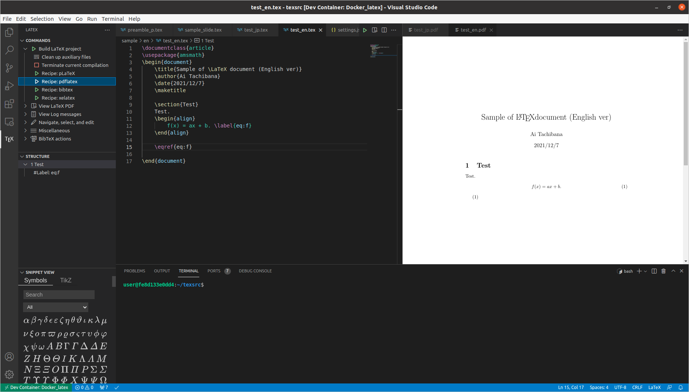

Docker Container として LaTeX の執筆環境を作る
0. はじめに
現在，Ubuntu 20.04 上に TeXLive をインストールして LaTeX の文書を作成している．今後，仕事等で使うマシンが Windows になる可能性がある．そこで，OS に依らずに使える執筆環境として Docker Container を用いるものを作成した．
過去に同様の環境を作ってくれていた方の Docker image やブログを参考に作成した．作成したものは，GitHub の Public リポジトリ (SeeKT/Docker_latex) にアップロードしている．
目次
- 1 採用しているコンパイルのルール
- 2 概要
- 3 ディレクトリ構成
- 4 使用方法
- 5 まとめ
1. 採用しているコンパイルのルール
- 日本語文書
platex+dvipdfmx(latexmkとして記述)pbibtex
- 英語文書
pdflatexbibtex
- スライド (beamer)
xelatexbibtexorpbibtex
2. 概要
Aruneno 様の aruneko/texlive を使って，Docker Container として TeX の執筆環境を作成した．また，Futa HIRAKOBA 様の 爆速で日本語LaTeX執筆環境を用意する を参考にして，VSCode の LaTeX Workshop を用いたコンパイルの効率化をしている．この2つのサイトにはとてもお世話になった．とても感謝している．
3. ディレクトリ構成
SeeKT/Docker_latex はこのようなディレクトリ構成をとっている．
|- .devcontainer/
| |- .latexmkrc: latexmk の設定ファイル
| |- devcontainer.json: VSCode の Remote Container 機能を使うときの設定
| |- docker-compose.yml: コンテナの起動に対する処理
| |- dockerfile: コンテナを作るための処理
|
|- .vscode/
| |- setting.json: LaTeX Workshop の設定
.vscode/setting.json でコンパイル方法を指示することで，コンパイルの効率化を図っている．
4. 使用方法
VSCode の Remote Development を用いて，コンテナ内に入る．そして，TeX ソースを開く．
日本語文書のコンパイルには，platex (latexmk) を使う．LaTeX Workshop の Recipe: pLatex をクリックし，View LaTeX PDF をクリックすると，右側に PDF ファイルが開かれる．
英語文書のコンパイルには，pdflatex を使う．LaTeX Workshop の Recipe: pdflatex をクリックし，View LaTeX PDF をクリックすると，右側に PDF ファイルが開かれる．

英語文書のコンパイルには，xelatex を使う．LaTeX Workshop の Recipe: xelatex をクリックし，View LaTeX PDF をクリックすると，右側に PDF ファイルが開かれる．

.vscode/setting.json を工夫すれば，一部の文書に対しては pdflatex みたいに設定できるらしいが，やり方がよく分からなかったので，今回はやらなかった．
5. まとめ
何故か上手くいかなくて悩んでいたが，TeX 本体をインストールするときを思い出したらなんとかいけた．時間かかったけど．
Docker Container としてプログラム (R, Python) の開発環境を作成した 資料 もあるので，一応リンクを貼っておく．